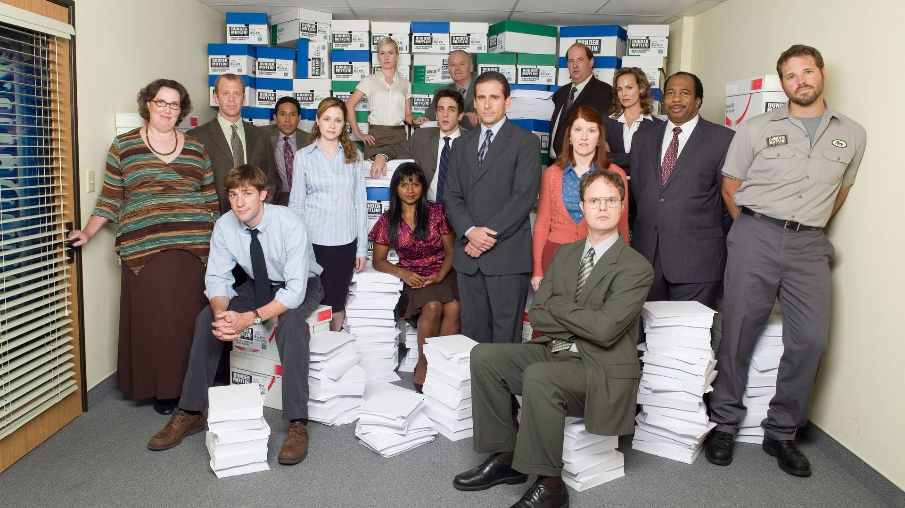

Eclectic and Electric 60s Rock Festival
By Kylo Ren
2 August 2020
Fun is defined by the Oxford English Dictionary as "Light-hearted pleasure, enjoyment, or amusement; boisterous joviality or merrymaking; entertainment".[1] Although particularly associated with recreation and play, fun may be encountered during work, social functions, and in daily life.
Read More
Samsung Marketing Event Rocks SXSW
By Penelope Pitstop
17 March 2020
The way the word fun is used demonstrates its distinctive elusiveness and happiness. Expressions such as "Have fun!" and "That was fun!" indicate that fun is pleasant, personal, and to some extent unpredictable.
Read More
Happening to Produce Five New Musical Showcases at Auditorium Shores 2019
By Korben Dallas
31 January 2020
Expressions such as "I was making fun of myself" convey the sense that fun is something that can be amusing and not to be taken seriously. The adjective "funny" has two meanings which often need to be clarified between a speaker and listener.
Read More

Check Out Our Updated Marketing Capabilities Dek
By Nathan Drake
1 December 2019
One meaning is "amusing, jocular, droll" and the other meaning is "odd, quirky, peculiar". These differences indicate the evanescent and experiential nature of fun and the difficulty of distinguishing "fun" from "enjoyment".
Read More
Happening Brings Pumping EDM to Brookdale Senior Center
By Lara Croft
5 November 2019
Fun's evanescence can be seen when an activity regarded as fun becomes goal-oriented. Many physical activities and individual sports are regarded as fun until the participant seeks to win a competition, at which point, much of the fun may disappear as the individual's focus tightens.
Read More
Saint Patty’s Photo Booth
By Leslie Knope
30 Septemer 2019
Surfing is an example. If you are a "mellow soul" (not in a competition or engaging in extreme sport) "once you're riding waves, you're guaranteed to be having ... fun".
Read More
Classic Hip Hop. Classic Cocktails.
By Michael Gary Scott
15 August 2019
The pleasure of fun can be seen by the numerous efforts to harness its positive associations. For example, there are many books on serious subjects, about skills such as music, mathematics and languages, normally quite difficult to master, which have "fun" added to the title.
Read More
What were the Most Happening Events of 2018?
By Walter White
6 July 2019
The pleasure of fun can be seen by the numerous efforts to harness its positive associations. For example, there are many books on serious subjects, about skills such as music, mathematics and languages, normally quite difficult to master, which have "fun" added to the title.
Read More
New partnership with Bacardi Rum
By Minnie Mouse
22 March 2019
In the modern world, fun is sold as a consumer product in the form of games, novelties, television, toys and other amusements. Marxist sociologists such as the Frankfurt School criticise mass-manufactured fun as too calculated and empty to be fully satisfying.
Read More
Partying at the New Midtown Lofts Development
According to Johan Huizinga, fun is "an absolutely primary category of life, familiar to everybody at a glance right down to the animal level." Psychological studies reveal both the importance of fun and its effect on the perception of time, which is sometimes said to be shortened when one is having fun.
Read More
Smoke Machines and Zombie Makeup: Our Halloween Extravaganza Downtown
By Lisbeth Salander
18 January 2019
For children, fun is strongly related to play and they have great capacity to extract the fun from it in a spontaneous and inventive way. Play "involves the capacity to have fun – to be able to return, at least for a little while, to never-never land and enjoy it."
Read More

Happening Moves into Our New Offices
By James Bond
26 December 2018
It has been suggested that games, toys, and activities perceived as fun are often challenging in some way. When a person is challenged to think consciously, overcome challenge and learn something new, they are more likely to enjoy a new experience and view it as fun.
Read More